The Siren
Version 7.5 (2007) GUI Tour
The Siren system is a general-purpose music description and
composition system; it is a collection of about 3750 Smalltalk classes
for
building musical applications. The current version works on VisualWorks
Smalltalk
running on Mac/Windows/*nix systems with MIDI, stereo audio, and
OpenSoundControl I/O. The Siren release is available here.
These screen dumps were made with Siren 7.5 running on an
Intel-based Apple Macintosh.
Details can be found in the on-line
Siren outline text, and in the
on-line
Siren reference manual. An earlier
version of this tour (with more details) can be found here.
Outline
Display List Views
The example screens below show the simple Siren display list editor;
it allows you to manipulate hierarchical structured graphics objects.
Using
pop-up menus, keyboard commands and mouse interaction uesrs can zoom
and scroll, select items, and operate on them. In the first example,
we're using a variant of the MS-Windows
XP look-and-feel, though running nuder Mac OS X and with the Siren
scroll and zoom bars.
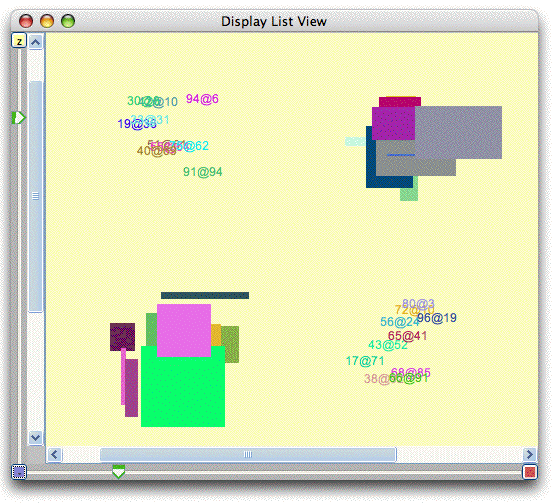
The second starting example illustrates a different layout of the zoom
and scroll widgets, and the use of another widget set. Note the
selected rectangle, for which a context-sentitive menu can be used..
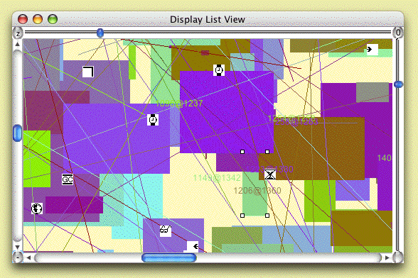
Layout Managers
Siren is based on the "Navigator MVC" model; in it various kinds of
layout
managers take structured objects and create display lists. The two
examples
below (which use the Motif look-and-feel) show a class inheritance
hierarchy presented first as an indented
list and second as a simple tree. Color is used to denote class species
relationships in the class hierarchies. A refined tree layout manage
could
do graphical balancing or top-down layout.
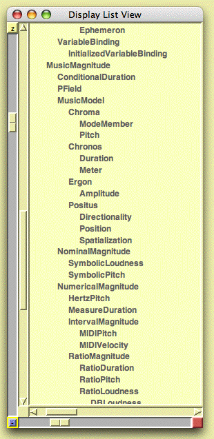
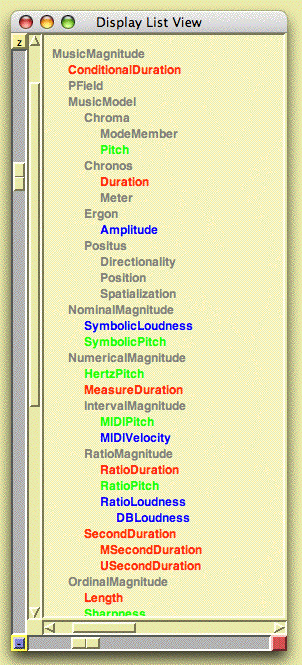
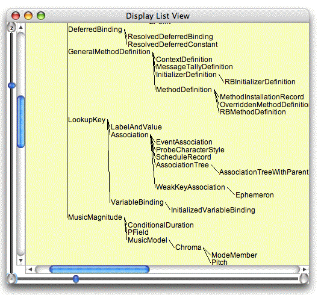
Hauer-Steffens Notation
Hauer-Steffens view is related to piano-roll notation; the lines are
placed
corresponding to the accidentals or the black notes on the keyboard.
The
note display is done as in the pitch/time view above.
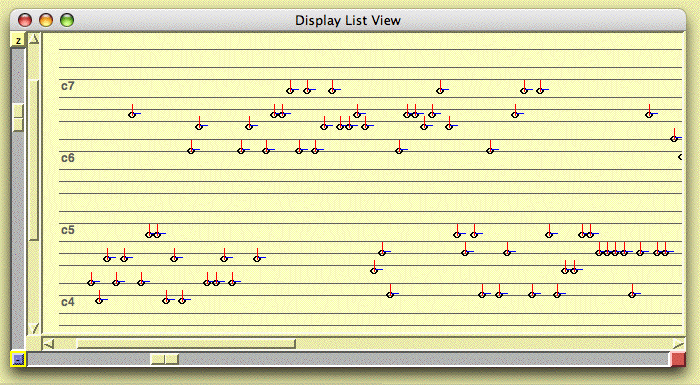
Function View
The multi-function view allows the viewing and editing of up to 4
functions
of 1 variable. The example shows linear break-point functions in red
and
yellow, an exponential segment function in blue, and a cubic spline
function
in green. The buttons along the left are for selecting a particular
function
for editing or file I/O.
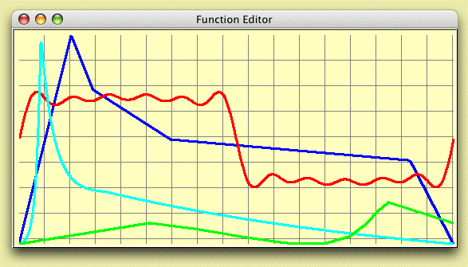
Sound View
The Siren sound view lets you zoom/scroll over stored sound object, and
to create new sounds based on file I/O or simple synthesis algorithms.
The figure below shows a frequency sweep and the editor's pop-up menu.
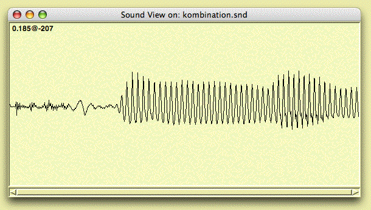
Sonogram View
The sonogram view displays an fft-derived spectrum. In the example
below
shows a sonogram os sung Chinese speech.
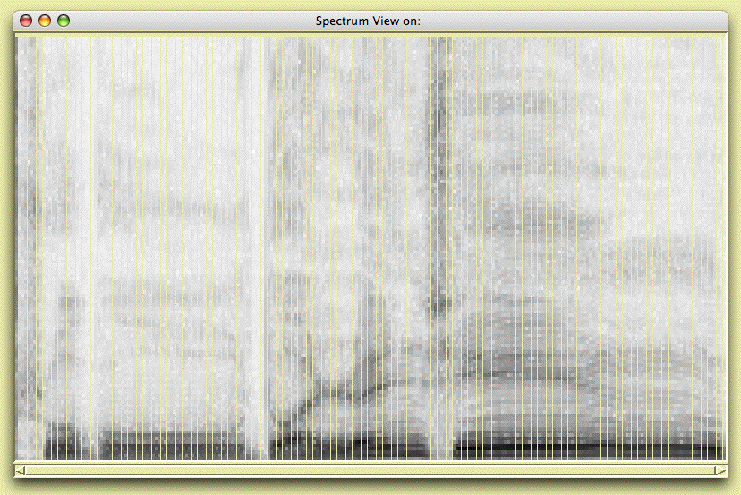
the same with colors
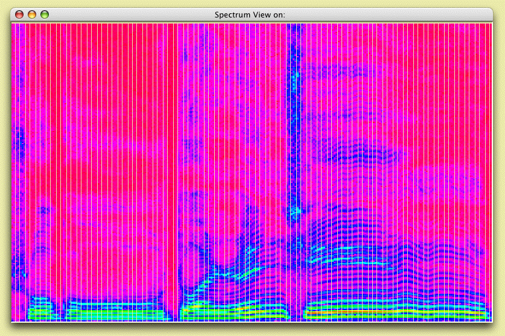
Loris Editors
Siren includes a series of tools for sound analysis/resynthesis using
the time-reassigned bandwidth-enhanced partial list representation
supported by Kelly Fitz's Loris package. The view below is for analysis
tuning and shows (from top to bottom) the original sound, the
resynthesized sound, the amplitude and frequency envelopes, and the
Loris spectrum.
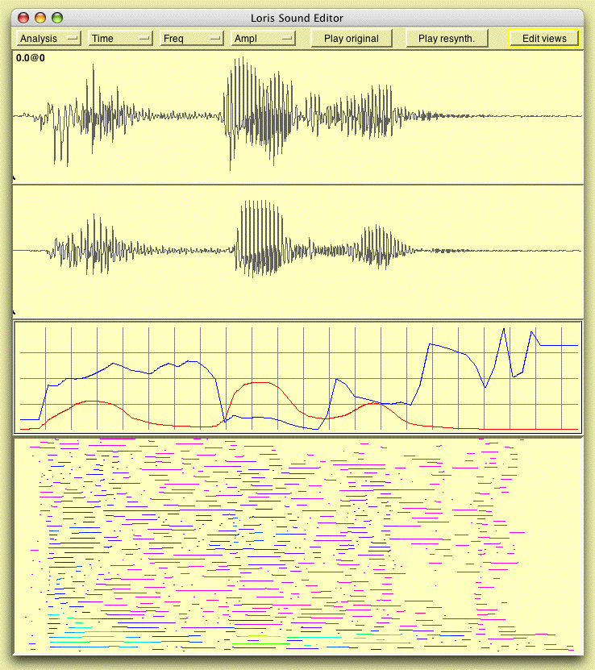
The simple dialog box below is for tuning the parameters of the Loris
analyzer.
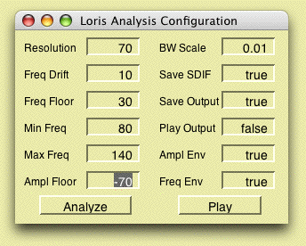
LPC Editors
There are also a few new tools for editing analysis files frmo linear
predictive coding (LPC) of sound. The figure below shows several
smoothed versions of the pitch estimates for a segment of a speech
signal.
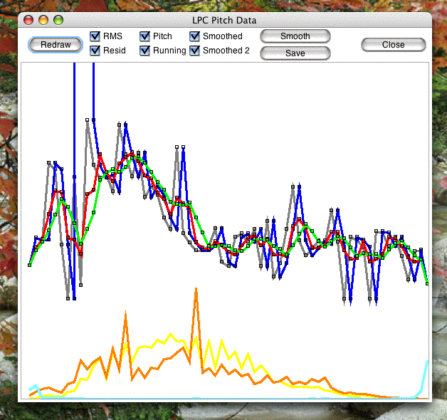
Siren Utility and Transport Views
A Smalltalk run-time environment usually includes a launcher view and a
logging transcript, often combined into a single window, as in this
view, which includes pull-down menu bar with access to all tools, tool
launcher buttons, and a scrolling text field (stdout, called
Transcript).
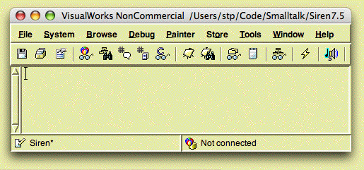
The Siren utility panel has buttons and menus for setting up Siren, and
testing the external (MIDI, sound, OSC) interfaces, and for the user
data load and flush functions.
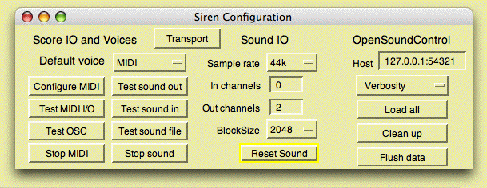
The Siren transport view consists of standard transport buttons and
clock counter, and a list of active scheuler clients, timers, etc. with
a selection-sensitive pop-up menu for operating on them.
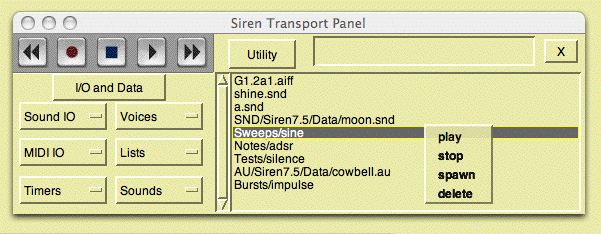
The buttons on the left of the transport view are hierarchical pop-up
menus of user data (sounds, scores), as in this list of my sounds.
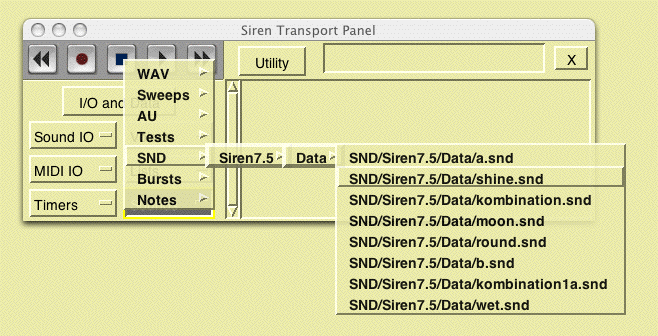
or this list of stored scores.
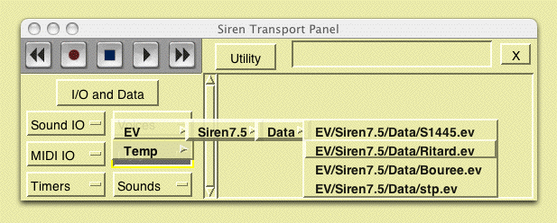
Stephen Travis Pope -- stp@create.ucsb.edu -- LastEditDate: 2007.04.14